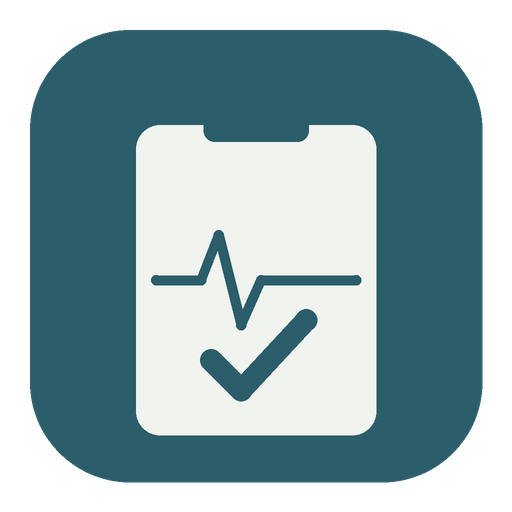
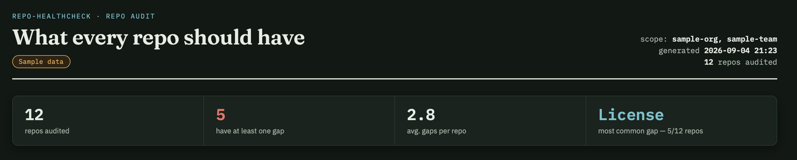
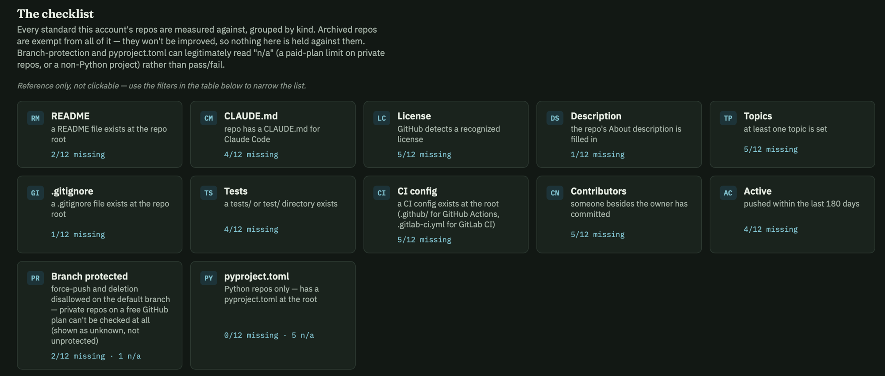
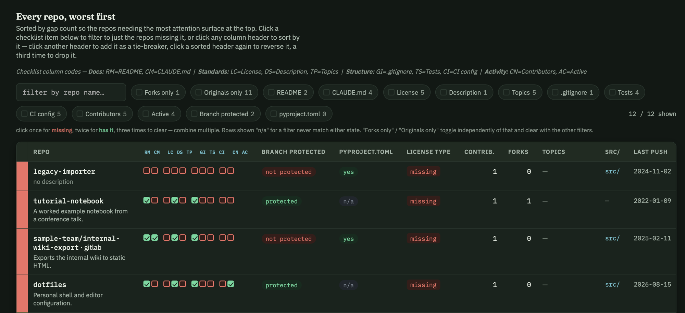

repo-healthcheck · a CLI for people with too many reposOne command looks at every repo you can see — on GitHub, and now GitLab too — and tells you, worst first, exactly what's missing: a license, a protected branch, a README, a CI config. The stuff you meant to add and then forgot you didn't.
None of these show up until someone hits them — usually the day it matters most.
No LICENSE file means GitHub's legal default is "all rights reserved" —
nobody, including future you, can safely reuse the code. And GitHub's own detector
sometimes reports a perfectly real GPL license as NOASSERTION, hiding it entirely.
Without branch protection, a single accidental git push --force to
main rewrites history with no way back. It happens on side projects
precisely because nobody thought a side project needed protecting.
Forked eight months ago, still public, still listed under your name. No tests, no CI, no idea if it still runs — and no way to find that out without opening every repo one at a time.
Run it once. It fetches everything the token can see, checks twelve things per repo, and hands you an interactive report — not a wall of JSON.
Total repos, how many have at least one gap, the average, and the single most common thing missing across the whole account — before you scroll to a single row.

Every check gets a two-letter code, a plain-English criterion, and a live missing-count — so "5/12 missing" always means something specific, never a mystery flag.

Every checklist chip filters the table on click. Every column header sorts, and stacks as a tie-breaker. "Forks only" and a search box come free.

Every standard, in one place — the same list that drives the checklist chips above.
tests/ or test/ exists.github/ or .gitlab-ci.ymlPass --gitlab and your GitLab projects land in the same table, same
worst-first sort, same twelve checks — tagged so you always know which platform a repo lives on.
Every repo the token can see — your own, plus every org you belong to —
in one call. --owner NAME narrows to one account's public repos.
Same twelve checks against GitLab's API — .gitlab-ci.yml instead
of .github/, protected branches via GitLab's own endpoint. Self-managed
instances work too, via --gitlab-url.
Reads GITHUB_TOKEN if it's set, otherwise falls back to
gh auth token — if you're already logged in via the gh CLI,
there's nothing else to configure. Read-only: it never writes to a repo it audits.
The account behind these screenshots had twelve repos and five gaps before it ever ran a single fix. Most accounts have more than twelve.